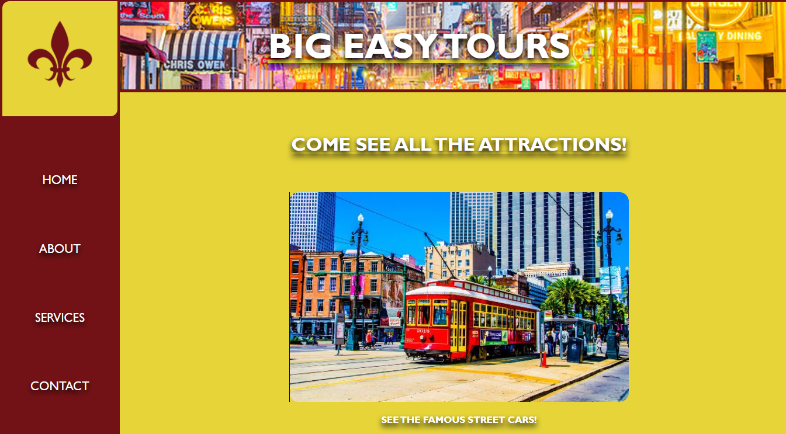

PORTFOLIO
Below you can see some projects I've been working on lately. I divide each project into four follow-up areas: comprehensive research, wireframing, design & development. This process allows me to create great product with client goals in mind.
Codecademy Company Homepage
As a project for Codecademy, I created a basic site for the fictional company, Big Easy Tours. The task was to practice using flexbox and grid.
View on Github ABOUT ME
I'm web designer & front-end developer with 7 years of professional experience. I'm interested in all kinds of visual communication, but my major focus is on designing web, mobile & tablet interfaces. I also have skills in other fields like branding, icon design or web development.
Earlier I was full-time freelancer for 6 years behind my studio Precise Design. Currently I'm working for little overgrown czech “start-up” called Heureka.cz Restu.cz as a Senior UI/UX designer Product designer.
OK, LET'S CREATE SOMETHING GREAT
If you like my work and have some cool project to work on, just send me an email or contact me through social sites listed below.